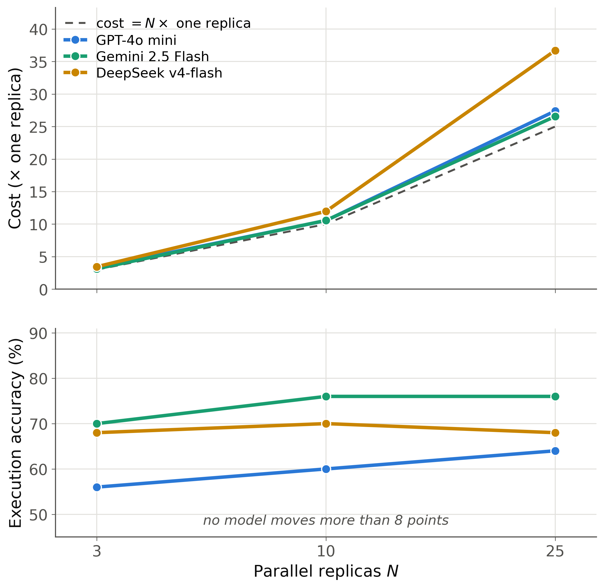
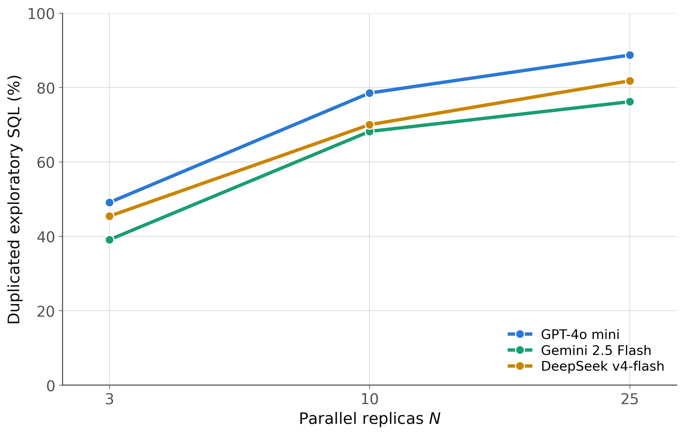
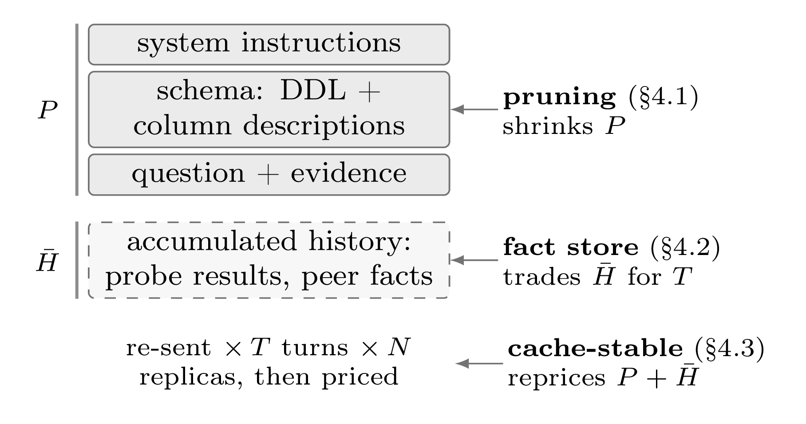
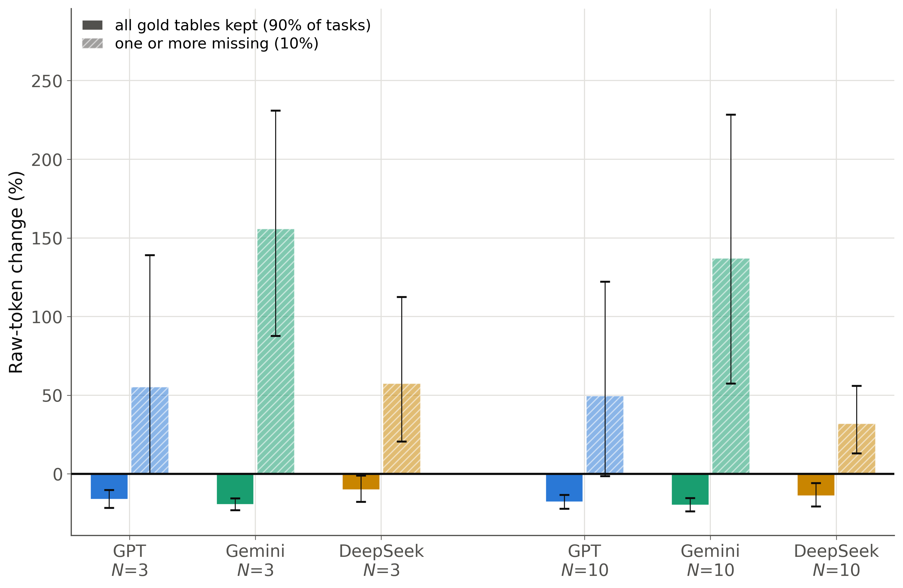
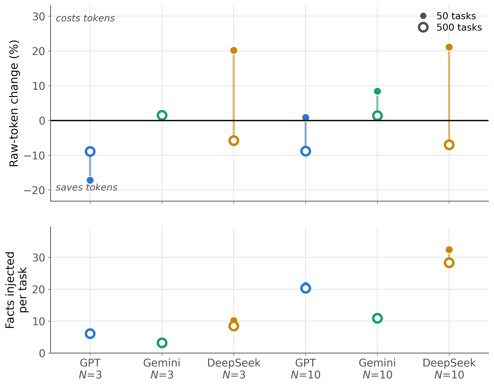
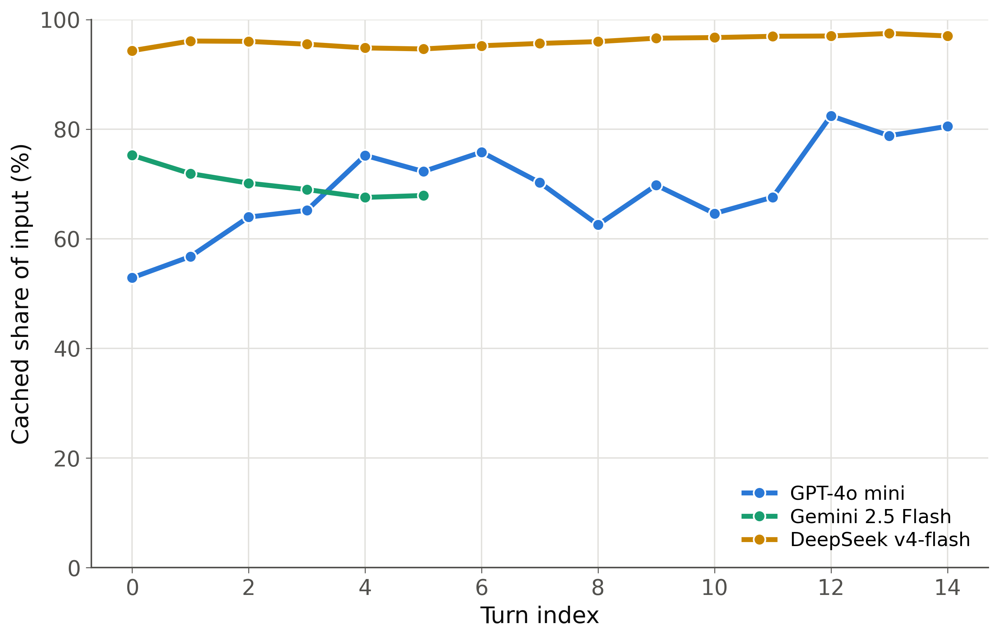
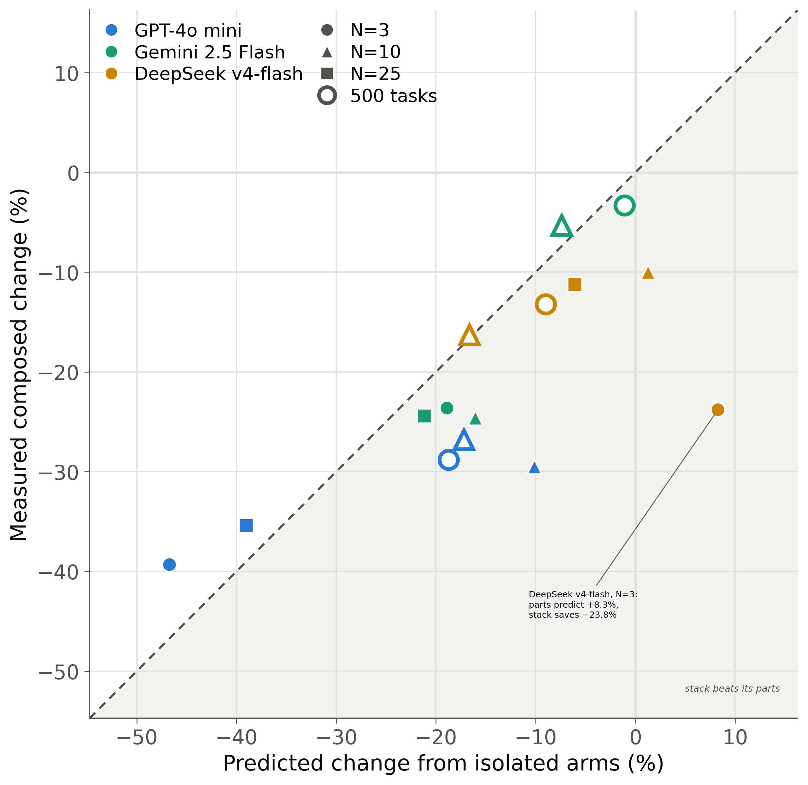

System instructions, the database schema, the question and its evidence.
Reason, then call one of two tools.
execute_sql runs an exploratory probe and its
result is appended to the conversation.
submit_sql ends the episode with the final query.
N agents run the same task on identical inputs at temperature zero, differing only in sampling.
best_of_n takes the replica reaching an executable
submission in the fewest turns.
Execution accuracy: the submitted query must return the same rows as the gold query.



Hybrid keyword and TF-IDF scoring over per-table descriptions, expanded along foreign keys. Always falls back to the full schema at execution time, because a dropped table costs more than it saves.
Rule-based summary after every probe, so no model calls and no extra cost. Facts are shared across the replicas of one task and ranked by how many found them independently. Advisory only.
Providers discount input only if the prefix is byte-identical and the prompt grows by appending, and the baseline loop violated both.
llm_turn carries prompt, completion and cached token counts
per turn, which is where both ledgers come from.
sql_execute tags every query explore or submit, which is
what makes duplication and probe counts measurable.
Nothing is aggregated at write time, so every table and figure is a script over these files and re-derives on demand.
formula_1. Schema 11,847
characters down to 6,354, five replicas, cached share above 92% from the
first turn, all five correct.


